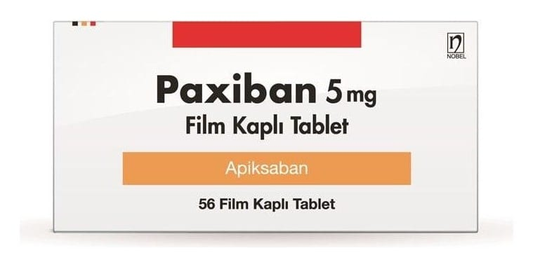

Paxiban 5 mg Film Kaplı Tablet, 60 Adet

Ne için kullanılır
KT · Bölüm 1• PAXİBAN, etkin madde olarak apiksaban içerir ve antikoagülanlar adı verilen, kan sulandırıcı olarak da bilinen bir ilaç grubuna aittir. Bu ilaç, kanın pıhtılaşmasını sağlayan önemli bir madde olan Faktör Xa’yı engelleyerek kan pıhtısı oluşumunu önler.
• Pembe renkli oblong bombeli film kaplı tablet. 56 ve 60 film kaplı tablet içeren ambalajlarda sunulmaktadır.
• PAXİBAN yetişkinlerde aşağıdaki durumlarda kullanılır:
• Düzensiz kalp atımı (atriyal fibrilasyon) olan ve en az bir ilave risk faktörünün (geçirilmiş inme veya beyine giden damarların geçici tıkanması sonucu oluşan geri dönüşümlü bir tür felç (geçici iskemik atak), 75 ve üzeri yaş, yüksek tansiyon, şeker hastalığı, kalp yetmezliği gibi) bulunduğu hastalarda, kalpte kan pıhtısı oluşumunu önlemek amacıyla kullanılır. Kan pıhtıları kopup beyne giderek inmeye yol açabilir veya diğer organlara giderek söz konusu organa ulaşan normal kan akışını engelleyebilir (sistemik embolizm olarak da bilinir). İnme, yaşamı tehdit edici olabilir ve acil tıbbi müdahale gerektirir.
• Bacaklarınızdaki toplardamarlarda (derin ven trombozu) ve akciğerlerinizdeki kan damarlarındaki kan pıhtılarını (pulmoner emboli) tedavi etmek ve bacaklarınız ve/veya akciğerlerinizdeki kan damarlarında kan pıhtılarının tekrar oluşumunu önlemek amacıyla kullanılır.